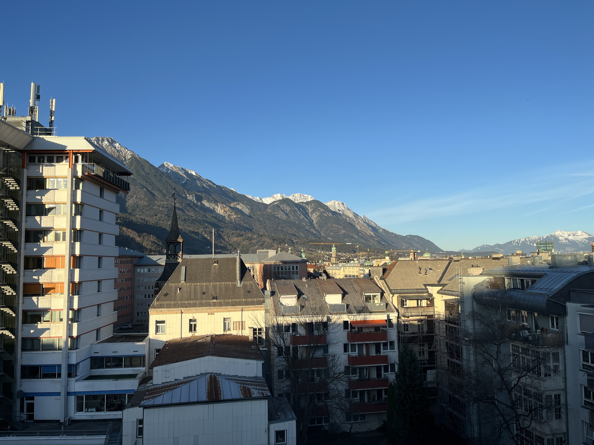
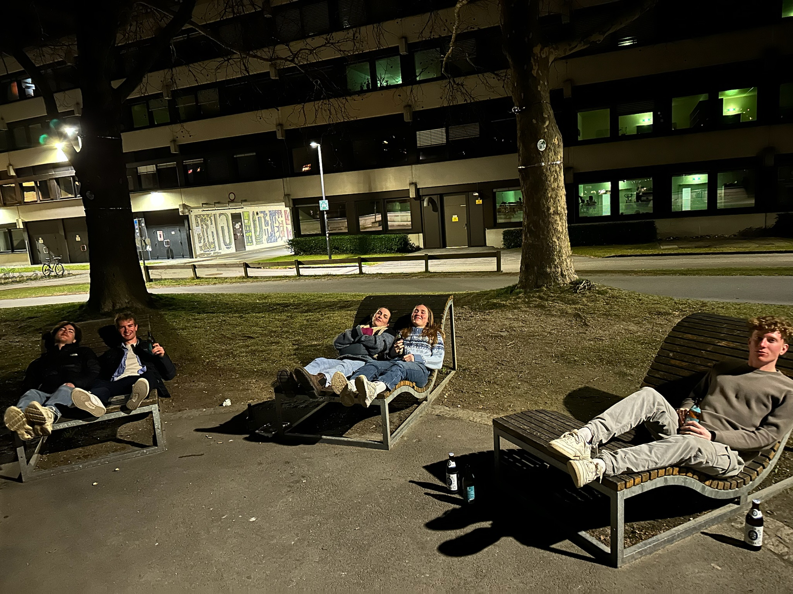
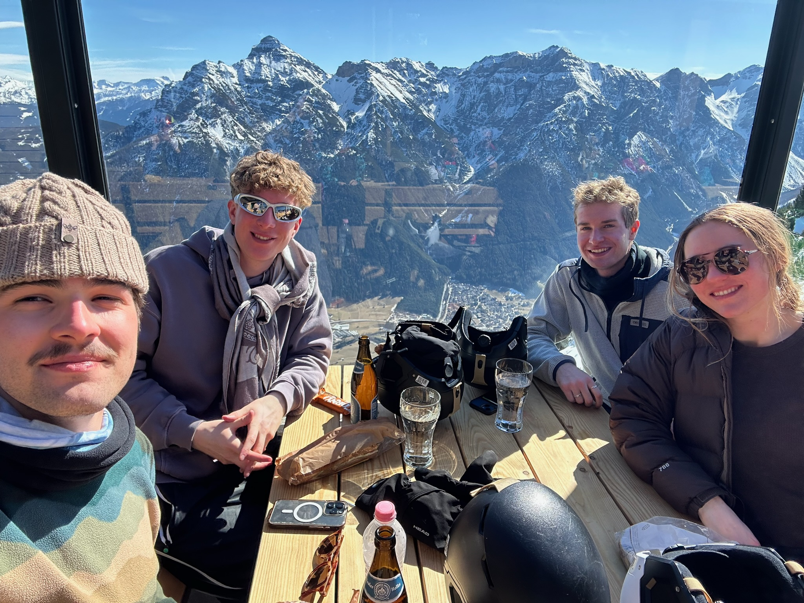

March 17, 2025
Innsbruck
Gonna be hard to top this weekend trip, Innsbruck is such a fantastic little city nestled in the Alps. Every time I’m in the mountains I’m blown away and question why I don’t live in a mountainous place all the time. Innsbruck is the kind of city I would love to live in when I’m older. Close to the mountains, not too big, relaxed culture, great public transport, and did I mention close to the mountains? We stayed at the Meininger Hotel in a six-person hostel room. It was super nice to have a room totally to ourselves to lay out all of our stinky skiing stuff at the end of the day. The hostel was across the street from the University of Innsbruck and the Inn River. I was very jealous. Every evening at sunset, students would sit on the side of the river, drink a beer, and chat. So naturally, we did the same the nights we were there. Everyone looked so happy and carefree, exactly my type of outdoor-loving people. Downtown Innsbruck was a fifteen-minute walk from the hostel and is super cute, but we really only went there to get food. The first night we went to Stiftskeller restaurant. I ordered a delicious mac and cheese dish, which even came with a salad! Prague could never. The food came in less than five minutes, it actually might have been the fastest restaurant service I’ve ever experienced. The second night we went to a pizza place called Trattoria-Pizzeria Due Sicilie. Such a cute little Italian place with great pizza and service for a pretty reasonable price by Innsbruck standards. Might have been my favorite meal to date. On the third night, we got takeaway burritos from Machete. The burritos were pretty average, I’ve had much better in Madison, but it was fun to eat along the river. I’m really hoping to be able to come back to Innsbruck in May to go hiking!




Skiing at Schlick 2000
I love skiing in the Alps! We chose Schlick 2000 as our ski destination since it was an easy half-hour bus ride from Innsbruck. All in we spent $180 for two days of skiing and rentals which feels like a pretty great deal considering it would be more expensive to ski on crappy Midwest hills for the same amount of time. Schlick 2000 is hidden from the road by the crest of a smaller hill. It was amazing to take the gondola up and have the mountain and trails emerge in front of me. Schlick has 15 miles of groomed trails, which were starting to get repetitive by the end, but still a lot of fun, especially considering even the easiest trails near the gondola were the same difficulty as the hardest trails at the ski places I’ve been to near Madison. The most fun I had was skiing the off-piste routes with Aubrey. Lots of steep moguls and weaving around trees, it was a blast and I felt myself get more competent every run! I felt bad for the ski rental place because I put quite a few dents and scratches on my skis. Both days we skied were absolutely gorgeous. We had highs in the 40s and perfectly clear and sunny. I was skiing in only a sweatshirt and still was sweating. The snow wasn’t great, it was a weird combination of slushy at lower elevations and icy on the steeper runs near the top of the mountain. The off-piste snow was better, although a bit thin, and even the worst spots were totally manageable. One of the workers said they hadn’t gotten any snow since December, all of the snow was created. I think we might have gotten in on the last good weekend of skiing for the season.
